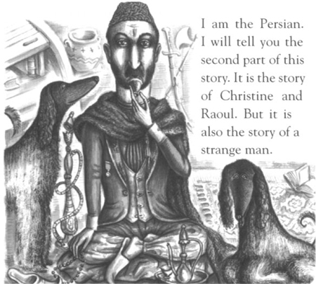
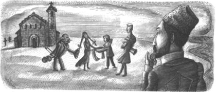

7

Câu chuyện Người Ba Tư

Tôi quen biết hầu hết mọi người ở Nhà hát Opera Paris. Thực chất thì tôi biết rõ nơi này. Tôi đã từng giúp kiến trúc sư thiết kế ra nhà hát này. Tôi biết nằm lòng mọi phòng ốc, hành lang, thậm chí cả tầng hầm ở đây.
Hôm diễn ra vũ hội hóa trang đó, tôi cũng có mặt. Tôi đã nhìn thấy Raoul và Christine trên nóc Nhà hát Opera. Tôi nhìn thấy Christine đi xuống cầu thang. Một lúc sau, tôi thấy Raoul cũng đi theo xuống cầu thang. Tôi đã đi theo Raoul và nói chuyện với anh ta.
"Raoul, anh đang buồn lắm phải không? Anh đang yêu Christine. Anh đang lo lắng cho cô ấy. Tôi cũng thấy lo lắm, Raoul ạ."
"Anh là ai vậy?" Raoul hỏi.
"Tôi là Người Ba Tư mà", tôi nói. "Anh từng thấy tôi ở Nhà hát Opera rồi mà."
Tôi tháo mặt nạ ra.
"Ồ, đúng rồi", Raoul nói. "Đúng rồi, Người Ba Tư. Tôi từng thấy anh ở Nhà hát Opera. Anh muốn gì?"
"Tôi muốn giúp anh", tôi nói.
"Giúp như thế nào chứ? Và tại sao anh lại muốn giúp tôi?" Raoul hỏi.
"Christine đang gặp rất nhiều nguy hiểm", tôi nói.
"Nguy hiểm gì chứ?" Raoul hỏi. "Anh nói cho tôi biết đi!"
"Christine có một người thầy", tôi nói. "Tên là Erik."
"Christine có kể cho tôi về anh ta rồi. Nhưng Erik là ai vậy?" Raoul hỏi.
"Tôi không thể kể hết cho anh về câu chuyện của Erik được", tôi nói. "Erik có một bí mật. Ngày xưa, Christine cũng có một bí mật. Nhưng bí mật của Erik không phải của Christine."
"Tôi không hiểu", Raoul nói.
"Khuôn mặt của Erik chính là bí mật của anh ta", tôi nói. "Còn Christine, ngày xưa chỉ được hát cho một mình Erik. Đó chính là bí mật của Christine. Nhưng bây giờ cô ấy có thể hát cho tất cả mọi người rồi. Và cô ấy đang gặp nguy hiểm. Chúng ta phải giúp cô ấy!"
"Chúng ta phải làm gì?" Raoul hỏi.
"Chúng ta phải đưa Christine rời khỏi Paris", tôi nói. "Chúng ta phải đưa cô ấy đi ngay ngày mai. Chúng ta sẽ đi vào buổi tối - sau buổi biểu diễn. Tôi sẽ nói chuyện với Christine."
Tôi nhìn vào khuôn mặt Raoul. Anh ta không tin tôi. Và anh ta bỏ đi.
Tôi là Người Ba Tư. Bây giờ tôi sống ở Paris. Nhưng tôi sinh ra ở Tehran, Ba Tư.
Tại sao tôi lại đến Pháp thì tôi sẽ kể cho mọi người nghe sau. Nhiều năm trước, tôi đã theo dõi một người đàn ông rất kỳ lạ. Tôi đã theo anh ta từ đất nước Ba Tư đến Pháp.
Một buổi tối, mười năm trước, tôi đang ở Brittany. Tôi đã theo dõi người đàn ông kỳ lạ đó dọc theo bờ biển. Tôi thấy anh ta vào một nhà thờ cổ. Rồi tôi thấy Raoul và Christine trên bãi biển. Và tôi thấy Philippe cùng cha của Christine. Tôi đã nghe được những gì họ nói.
"Ta sẽ gửi đến nàng thiên thần Âm nhạc", cha của Christine nói.

Rồi Christine nghe thấy tiếng đàn violin.
"Có phải đó là thiên thần Âm nhạc không?" cô ấy hỏi.
Tôi cũng nghe thấy tiếng đàn. Tiếng đàn phát ra từ nhà thờ cổ. Tiếng đàn đó rất hay, rất hay. Nhưng đó là do một người đàn ông tạo ra. Anh ta không phải là thiên thần!
Nội dung
- Tựa
- Mục lục
- Lưu ý về Tác giả
- Lưu ý về Câu chuyện
- Những nhân vật trong Câu chuyện
- 1 Thiên thần Âm nhạc
- 2 Buổi tiệc tại Nhà hát Opera
- 3 Raoul đến Nhà hát Opera
- 4 Khoang số 5
- 5 Chiếc gương trong phòng thay đồ
- 6 Vũ hội hóa trang
- 7 Câu chuyện của người Ba Tư
- 8 Christine mất tích!
- 9 Bên dưới Nhà hát Opera
- 10 Hồ và Cây
- 11 Bóng ma Nhà hát Opera
- Bản quyền